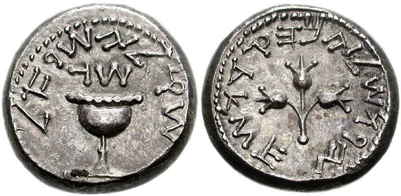
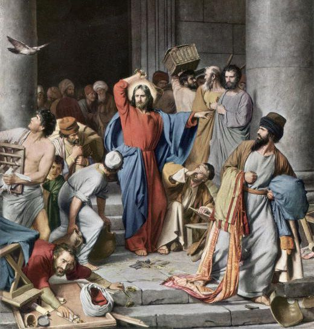
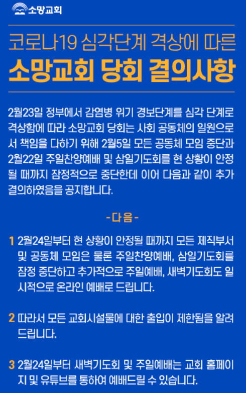

온라인 예배에는 성령이 없다 ? - 예수님과 사마리아 여인과 은화 이야기
게시: 2020-02-24T06:30:25+09:00
지난주에 개탄스러운 기고문 하나를 보았습니다. https://www.christiantoday.co.kr/news/328815 요약하면 코로나19건 뭐건 감염 위험을 무릅쓰고서라도 반드시 교회에 나와서 예배를 드려야 하며, 온라인 예배와 온라인 헌금으로 대체되어서는 안된다는 주장입니다. 이유는 여러가지를 댑니다다만, 무엇보다 저는 교회에 나와야만 성령이 임재하신다는 주장에는 전혀 동의할 수 없습니다. 이 기고문을 올린 목사님은 이런 말까지 하셨습니다. "여건이 좋지 않기 때문에 온라인으로 예배를 한다는 논리는 구약시대에 예루살렘까지 가지 않고 가까운 산당에서 제사하던 논리와 다르지 않다." 이건 정말 기독교가 아니라 유대교스러운 주장입니다. 저 가까운 상당에서 제사 지내는 것은 사마리인들 이야기이기 때문입니다. 구약 시대는 물론 예수님 시대까지도 유대인들은 사마리아인들을 이교도 취급을 했습니다. 사마리아인들은 앗시리아가 북 이스라엘 왕국을 멸망시킨 뒤 끌려가지 않고 그 땅에 남아 외국인들과 혼혈이 된 유대인들을 말한다고 합니다. 신앙적으로는 여호와 하나님을 섬기기는 하되, 바빌론 유수에서 돌아와 예루살렘에 다시 성전을 쌓은 유대인들이 그들을 배척했기 때문에 나블루스(Nablus) 지역의 게리심(Gerizim) 산에 자신들만의 성전을 따로 쌓았고 거기서 자기들끼리 하나님께 제사를 드렸습니다.
원래 유대인들은 아무데서나 자기들끼리 하나님에 대한 제사를 지내서는 안되었습니다. 반드시 예루살렘 성전에서 제사장의 주관 하에서만 제사를 지낼 수 있었습니다. 그 과정에서 제사장 계급은 막대한 경제적 이익을 취했습니다. 제물로 쓸 소와 양, 비둘기의 판매는 물론, 성전에 내야 하는 인두세의 환전도 독점적으로 취급했기 때문이었습니다. 당시 유대 지방은 로마의 지배 하에 있었으므로 로마 화폐인 데나리온(denarius)이 통용되었는데, 성전에 내는 인두세는 반드시 과거 유대 왕국 화폐인 반-세겔(shekel)로 내야했습니다. 이 환전 과정에서도 막대한 (대략 10배) 환차익이 제사장 계급으로 넘어갔습니다. 사마리아인들은 그런 유대인들의 전통과 질서에 따르지 않았기 때문에 이교도 취급을 받았습니다. 저 목사님이 기고문에 언급하신 '가까운 산당에서 제사하던 논리'는 바로 저것을 말하는 것 같습니다.

(AD 68년 경의 예루살렘 세겔 은화입니다. 앞면에는 '이스라엘 세겔, 3번째 해'라고 되어 있고 뒷면은 '성스러운 예루살렘'이라고 되어 있습니다. 제1차 유대반란 때 주조된 것입니다.) 그러나 정작 예수님께서는 사마리아인들에게 뭐라고 하셨습니까 ? 예루살렘 대성전에서 드리지 않는 제사는 모조리 무효이므로 너희들은 예루살렘 제사장의 권위에 복종하라고 꾸짖으셨나요 ?
요한복음 4장 19절~23절 19 여자가 가로되 주여 내가 보니 선지자로소이다 20 우리 조상들은 이 산에서 예배하였는데 당신들의 말은 예배할 곳이 예루살렘에 있다 하더이다 21 예수께서 가라사대 여자여 내 말을 믿으라 이 산에서도 말고 예루살렘에서도 말고 너희가 아버지께 예배할 때가 이르리라 22 너희는 알지 못하는 것을 예배하고 우리는 아는 것을 예배하노니 이는 구원이 유대인에게서 남이니라 23 아버지께 참으로 예배하는 자들은 신령과 진정으로 예배할 때가 오나니 곧 이때라 아버지께서는 이렇게 자기에게 예배하는 자들을 찾으시느니라
(예수님께서는 유대 사회에서 경멸과 증오의 대상이던 사마리아인이나 창녀, 세리들을 가까이 하셨습니다. 그러나 요즘 기독교인 중에는 중국인들에 대한 무차별적 증오심과 경멸을 거리낌없이 퍼붓는 분들이 있습니다. 스스로 원해서 중국인이 된 사람도 없고, 스스로 원해서 코로나19를 퍼뜨리는 사람도 없을 것입니다. 예수님께서는 분명히 자신을 보고 '주여 주여'라고 외치는 자들이 천국 가는 것이 아니라 자신의 가르침을 실천하는 자들이 천국에 들어갈 수 있다고 하셨습니다.)
오히려 예수님의 분노를 불러일으킨 것은 막대한 이익을 남기고 환전을 하고 가축을 팔던 장사꾼들, 즉 제사장들에게 상납하던 그들의 하수인들이었습니다. 그리고 그렇게 예수님으로 인해 경제적 특권에 위협을 느낀 제사장들과 서기관들, 즉 기득권 세력은 로마라는 외세의 힘을 빌려 예수님을 죽이기로 작정합니다. 누가복음 19장 45절~47절 45 성전에 들어가사 장사하는 자들을 내쫓으시며 46 그들에게 이르시되 기록된 바 내 집은 기도하는 집이 되리라 하였거늘 너희는 강도의 소굴을 만들었도다 하시니라 47 예수께서 날마다 성전에서 가르치시니 대제사장들과 서기관들과 백성의 지도자들이 그를 죽이려고 꾀하되

(예수님께서는 광야에서 악마를 상대하실 때도 말로 꾸짖으셨지만 성전의 환전상에 대해서는 그야말로 폭력을 휘두르셨습니다. 악마에게는 말이 통해도 종교로 돈을 벌려는 자들에 대해서는 말이 안 통하셨나 봅니다.)
특히 저 기고문에서는 중소 교회의 공포심도 느껴집니다. 하나님은 인간을 모두 평등하게 만드셨고 아무리 잘난 사람이나 아무리 못난 사람이나 하나님 앞에서는 다 원죄를 가진 필멸자에 불과하지만, 정작 같은 인간들끼리 보기엔 사람마다 외모나 재주, 성품이 결코 평등하지 않습니다. 그러다보니 목사님의 설교에도 역량의 차이점이 많이 느껴지는 것이 사실입니다. 그래서 어떤 목사님에게는 많은 신도들이 몰려서 대형 교회가 되고, 어떤 목사님들은 동네의 작은 교회로 그치게 됩니다. 특히 '건전한' 대형 교회에서는 목사 아들에게 목사직을 물려주는 '천박한 세습질'을 하지 않고 전국에서 역량이 좋은 목사님들을 찾아 초빙하기 때문에 더욱 많은 신도와 헌금이 몰려들어 더욱 강력한 교회가 됩니다. 저도 온라인으로 (지금은 은퇴하신) 압구정 소망교회 김지철 목사님 설교를 자주 들었는데, 저처럼 삐딱한 시선을 가진 사람이 봐도 정말 훌륭한 설교를 하시더군요. 저처럼 믿음 약한 사람에게도 큰 도움이 되었습니다. 그런데 이런 온라인 설교, 특히 온라인 예배는 중소 교회에게는 치명적인 위협이 됩니다. 훨씬 더 은혜롭고 훌륭한 목사님의 설교가 있는데도 왜 신도들이 그저그런 목사님의 별로 인상적이지 못한 설교를 들으러 갈까요 ? 바로 시간과 공간의 제약 때문입니다. 저는 압구정에서 먼 곳에 살기 때문에, 매주 압구정 소망교회에 갈 수가 없습니다. 또 압구정 소망교회가 아무리 큰 교회라고 해도 전국에서 몰려오는 수만 명을 수용할 정도로 예배당이 크지 않습니다. 하지만 온라인 예배는 이야기가 다릅니다. 몇만 명이건 몇십만 명이건 수용이 가능할 뿐만 아니라, 지구 반대편에 있는 사람도 순식간에 참석이 가능합니다. 특히 압구정 소망교회 등과는 달리, 동네의 작은 교회들은 그런 온라인 예배와 온라인 헌금을 위한 시스템을 갖출 여력이나 역량이 없는 경우가 많습니다. 노년층 신도들이 그런 온라인에 익숙하지도 않고요. 제가 전에 다니던 작은 교회 목사님은 (많은 경우 개신교 목사님들이 그러듯) 정치적으로는 우파셨고, 설교 중에 자유민주주의의 중요성과 좌파 세력의 준동에 대한 우려를 종종 말씀하시기도 했습니다. 그런데 한번은 그 교회 바로 옆에 인근 대형 교회의 제2 예배당이 들어선다는 소문이 퍼지자, 설교 도중에 이런 말씀을 하시더군요. "그렇게 대형 교회가 동네 구석구석까지 세력을 넓혀서 신도들을 다 가져가는 것이 옳은 일인지 모르겠습니다." 그거야말로 평소 개탄하시던 좌파 세력들이나 하던 이야기였습니다. 기업의 독과점은 결국 소비자들이 그 피해를 입기 때문에 막아야 하는 것입니다. 종교, 특히 개신교 교단 문제에서도 다양성과 중소 교회 목회자들의 몫을 보장하는 것이 중요할까요 ? 글쎄요, 기업의 경제적 독과점 문제와 종교 지도자의 독과점 문제가 같은 것인지 저도 잘 모르겠습니다. 종교개혁 이전 로마 교황청이 유럽 전체에 대한 종교 독점권을 쥐고 있을 때 벌어졌던 카톨릭의 처참한 부패상에 대한 기억도 있습니다만, 다미선교회나 이번 신천지와 같은 소수 이단 문제도 있다보니, 뭐라고 이야기해야 할지 잘 모르겠습니다. 다만 저는 이번 코로나19 확산 관련하여, 가급적 온라인 예배로 대처하는 것이 매우 바람직하며, 무조건 교회에 나와서 예배를 드리는 것이 맞다고 주장하는 일부 개신교 목사님들의 주장은 전혀 바람직하지 않다고 믿습니다.
PS. 이 글은 일요일에 미리 써둔 글입니다만, 지금 보니 압구정 소망교회는 잠정적으로 예배를 온라인으로 대체한다고 발표했네요. 바람직한 일입니다.

Source : https://www.britannica.com/topic/Samaritan https://en.wikipedia.org/wiki/Shekel